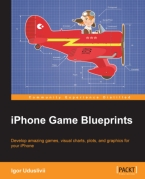
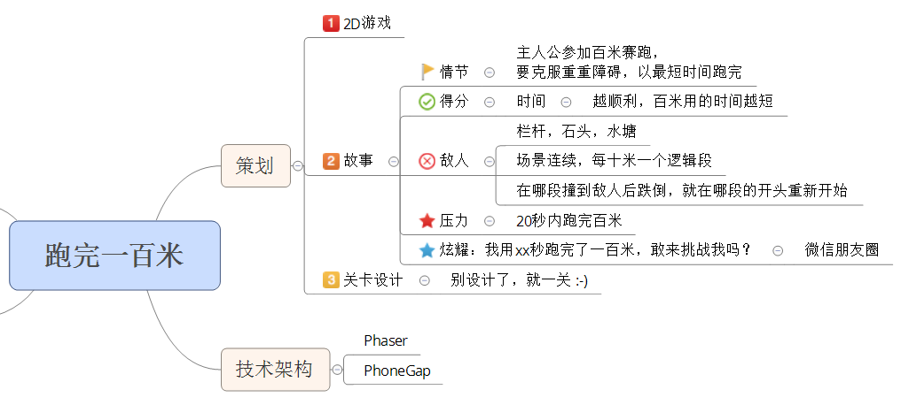

上一篇博客讲到最难的是策划，那是真的，因为想了好多天都没有完全决定要做一个什么样的游戏。下面是我这几天想到的一些问题。
开发3D还是2D游戏？
比较好决定，不会做3D，只能选2D游戏来做。
什么类型的游戏？
这个太难决定了，游戏的种类太多：棋牌，跑跳，射击，赛车，角色扮演，动作游戏，宝石消除，策略，数独，智力问答，等等。
当时首选做跑跳类的，然后有想做宝石消除，然后又想做数字类的智力游戏（类似数独），然后又想做简单的赛车游戏，后来又想做一个汉诺塔。反反复复的怎么都定不下来，于是干脆看了本书《iPhone Game Blueprints》

看书对选择根本没有帮助。最后（其实就是今天），还是想先做个跑跳类的吧，大部分人应该还是喜欢这种有动感也有点点压力的游戏。
跑完一百米！
只要定下来做什么类型的游戏，接下来就好办多了。下图就是游戏《跑完一百米》的游戏策划。

游戏情节
任何游戏都需要一个情节，这样会让你的游戏更有灵魂。我们的情节是：主人公参加百米赛跑，要克服重重障碍，以最短时间跑完。
得分
一个游戏总要有玩家能得到的东西。麻将游戏是玩家胡了，射击游戏是玩家消灭掉了所有的坏人，我们的游戏呢？既然大家都是跑一百米，那得分就是玩家以更短的时间跑完一百米。所以我们在游戏里要显示计时，玩家要想办法用越短的时间越好。
敌人
一个好的情节当然少不了反派。玩家要得分，那反派就要想办法让你不得分或者少得分。有了冲突，游戏才更有压力和刺激。
目前准备在跑道上设置一些栏杆、石头和水塘。玩家一碰到这些敌人就会发生影响玩家得分的事情。具体在我们的游戏里应该设计成什么事情呢？一般的游戏是损失一条命或者失血。由于本游戏的得分在于时间，那最好能想出一个让玩家损失时间的惩罚。
我们可以这样设计：把一百米分成十段，每段十米。如果在哪个段内撞到敌人跌倒,那玩家就得从该段的起点处重新开始跑。为什么不从百米的零米起点处重新开始？考虑到这是一个休闲小游戏，如果每次失败都从游戏最开始的地方重新开始，那一些初级用户会很快对游戏失掉兴趣，也就体会不到后面几十米的漂亮跑道了。
压力
等等，前面对敌人的设计貌似给了玩家无敌模式，如果玩家怎么都跑不完一百米，那么游戏永远不会结束了？玩家就会在某个十米段里面不停的循环？
你的考虑是对的，我们需要给游戏加一个停止条件：玩家需要在20秒内跑完一百米。这样既可以停止游戏，又可以在游戏里给玩家一些压力。
炫耀
游戏玩得好肯定值得在朋友间炫耀炫耀的。玩家跑完百米出现You Win界面时，我们可以支持转发微信朋友圈，炫耀内容自动生成“我用3秒跑完了一百米，敢来挑战我吗？”当朋友点击链接后，显示炫耀图片（用时，跌倒次数等等），并显示链接到AppStore/Google Play去下载“跑完一百米”来迎接朋友的挑战。
关卡设计
如图所言，实在想做个小游戏，就不要关卡了，统共就一关。
今天的结束语
终于完成了策划，值得庆贺！下一个博客就要讲到最激动人心的部分：搭环境coding啦！